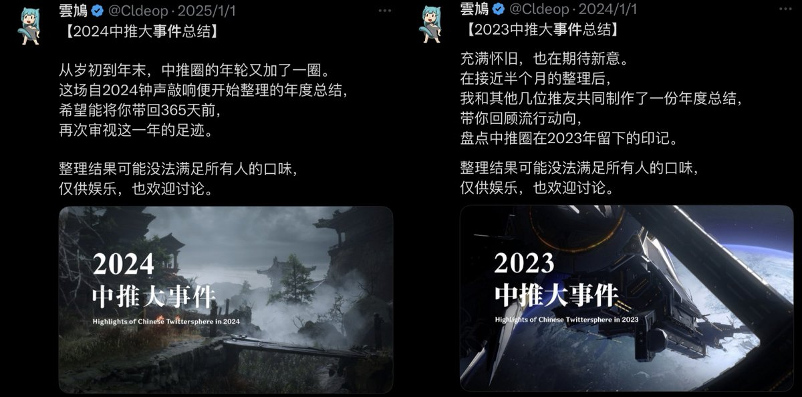

Winit420
@winterfruit_1
没什么参考价值，中推这个范围太广了，不同圈子各有各的事
“大事件”对于每个人而言都是不同的，你认为天大的事可能和其他人毫无关系
世界上没有任何一件事是大事。
但对于个人而言，你觉得重要的事，就是大事

雲鳩
@Cldeop
不知道还有多少人记得「中推大事件」这个年更节目😂前两次总结限于能力还是以键政圈居多，其他圈子的总结不算到位，现在看来都已成为再未有人提起的历史了🥲
记录每个人都经历过的历史，是我入推以来的固有传统；今年的总结也会更多顾及到其他圈子发生的大事，欢迎各位投稿👍
查看往期可进入评论区⬇️ https://t.co/N4vVBs1uB2